LLaDA-V：把 LLaVA 的语言塔换成掩码扩散模型
LLaDA-V: Large Language Diffusion Models with Visual Instruction Tuning
GitHub star 为 2026-10-20 的快照。阅读状态、进度与收藏只保存在你的浏览器里。
逐节精读
这部分按论文的章节顺序，用本站自己的话把整篇论文从头讲一遍。读懂某个概念需要的背景知识，会在第一次用到它之前单独讲清楚（青色框）。每个结论都尽量说出“因为什么、所以什么”。标“推算”的数字是本站根据论文数据算出来的，标“读图估计”的数字是从原文曲线上读出来的近似值，都不是论文原话。本页以 arXiv v2（2025-06-04）为主线；CVPR 2026 正式版新增的内容集中放在第 5 节。每节末尾有英文原文的链接。
0 导读：这篇论文解决什么问题
多模态大语言模型（MLLM）能读图、读视频，再用文字回答问题。今天绝大多数这类模型都用同一个配方：一个视觉编码器把图像切成小块、变成一串特征向量；一个很小的连接层把这些向量“翻译”成语言模型能读的词向量；最后由一个自回归（AR）语言模型从左到右、一个词接一个词地写出回答。LLaVA 是这个配方最有名的代表，Qwen2-VL、LLaVA-OneVision 都是它的变体。
2025 年初，LLaDA 证明了另一类语言模型也能做到 8B 规模：它不从左到右接龙，而是先把整段回答全部遮住，再分几轮把遮住的位置填回来，这叫掩码扩散。LLaDA 的纯文本能力和 LLaMA3-8B 大致在同一档。于是有一个自然的问题：如果把 LLaVA 配方里的 AR 语言模型直接换成 LLaDA，能不能得到一个同样好用的多模态模型？
LLaDA-V 就是这个实验。作者几乎原封不动地沿用了 LLaVA 系列的做法：视觉编码器用 SigLIP2，连接层用两层 MLP，训练分三个阶段，合计约 1,600 万条图文指令样本。真正改动的只有两处：训练目标从“预测下一个词”换成“只遮住回答，再把它猜回来”；注意力从因果（每个词只能看前面）换成整段对话双向可见。论文最有价值的部分是对照设计：作者另外训了一个 LLaMA3-V，视觉编码器、连接层、数据和训练阶段都和 LLaDA-V 相同，只把语言塔换回 LLaMA3-8B-Instruct。在 18 个基准上，LLaDA-V 赢了 11 个，优势集中在多学科知识题（MMMU 48.6 对 45.4）和多图、视频理解；在图表、文档和真实场景照片上（AI2D、DocVQA、RealworldQA）则落后。和当时其他扩散式或“AR + 扩散”混合式的多模态模型相比，它的分数最高。
这篇论文的贡献是实证性的：它没有提出新的网络结构，而是回答“扩散语言模型能不能当 MLLM 的语言塔”。读的时候要特别留意数字背后的条件。对照组只在多模态数据上对齐，两个语言塔本身的预训练规模和对齐程度并不相同；18 个基准分数中有 13 个只让模型生成 2 个 token 的选择题答案；不少胜负的差距小于一次评测本身的统计波动。论文后来发表在 CVPR 2026，正式版补充了推理速度和注意力形态的分析。
读完这部分，你应该能回答这几个问题：
- LLaVA 式的 MLLM 由哪几部分组成，每个训练阶段训练的是什么？
- 掩码扩散模型怎样在“图像 + 问题 + 回答”的数据上训练，为什么只遮回答？
- 多轮对话里，注意力是整段双向好，还是按轮次因果好？这对能不能缓存 K/V 意味着什么？
- 推理时模型怎样从一段全遮住的回答开始写出答案？官方评测到底让它写了多长？
- “和 LLaMA3-V 用同样的数据”对齐了什么、没对齐什么？18 个基准里的胜负各有多大份量？
- 扩散 MLLM 推理有多快？CVPR 版补充的速度数字是在什么条件下测的？
1 引言：多模态模型几乎都是自回归的，扩散能不能也行
在 LLaVA 这类模型里，图像只是输入的一部分。视觉编码器输出的特征放在问题文字前面，像一段“前缀”；真正要生成的只有文字回答，而回答是 AR 语言模型按下一个词预测的方式一个个写出来的。训练时，只在回答的每个位置上算“下一个词猜对了没有”的交叉熵。所以说这类模型是“AR 的”，指的是文字部分的建模方式。
2024 年前后出现了一批“理解 + 生成”统一模型，希望一个模型既能看图回答，又能画图。它们大多保留 AR 语言模型来写文字，只在生成图像时引入扩散或类似扩散的方法，比如 MetaMorph、Show-o、JanusFlow、Orthus，原文把它们归为“AR + 扩散”混合模型。另一类尝试让文字也用扩散生成，例如 D-DiT：它对图像用连续扩散、对文字用离散的掩码扩散，但它的语言部分规模小、能力弱，理解类基准上的分数远低于 AR 模型。
作者对现状的判断是：混合模型的语言能力其实来自 AR 语言模型，扩散只是画图的工具；纯扩散的尝试又受限于语言部分太弱。这两类都没有回答一个更干净的问题：如果文字回答完全由一个足够强的扩散语言模型来生成（训练和采样都不用 AR），多模态理解能不能做到 AR 模型的水平？
LLaDA 让这个问题第一次可以认真地问。它是一个从零训练的 8B 掩码扩散语言模型，经过预训练和监督微调后，在多数文本基准上接近 LLaMA3-8B-Instruct。于是作者选了最朴素的路线：不发明新结构，直接套用在 AR 模型上已经被反复验证过的“视觉指令微调”框架，把语言塔换成 LLaDA，看看会发生什么。为了把这件事做成一个可比较的实验，他们需要补齐几块：多轮对话下的训练目标、注意力该怎么设、推理流程、分阶段的训练策略。这几块合起来就是 LLaDA-V。
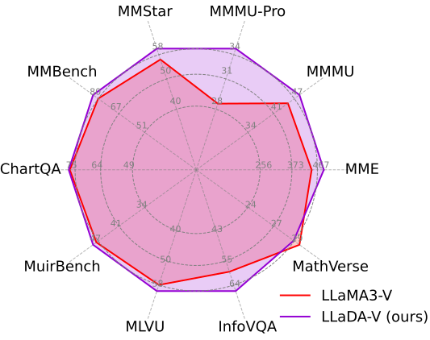
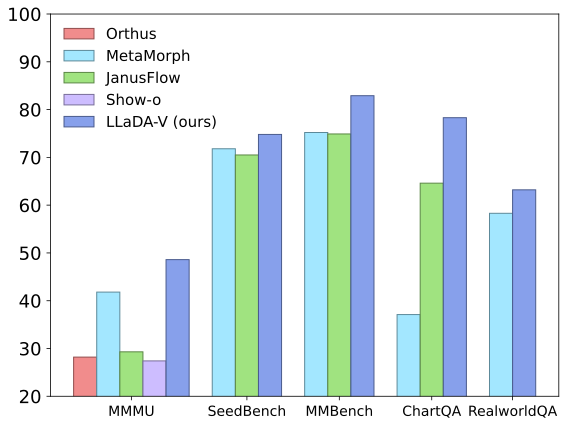
读这张图要注意三点。第一，雷达图只画了 18 个基准中的 10 个；没画进来的 8 个里，有 6 个是 LLaDA-V 输掉的（AI2D、DocVQA、RealworldQA、MathVista、SEED 图像、SEED 视频），画进来的 10 个里只有 MathVerse 是输的。第二，MME 那条轴的刻度是 256–467，对应的是 MME 的“认知”分（LLaDA-V 491 对 446）；MME 的“感知”分 LLaDA-V 反而低（1507 对 1581），图里没有体现。第三，因为每条轴刻度不同，面积大小会放大差距：MMMU-Pro 轴只跨 28 到 34 这 6 分，7 分的领先在图上就像翻了一倍。完整数字见第 4.3 节。
引言里的主要结论，作者概括为三点：
- 提出 LLaDA-V，一个训练和采样都纯粹基于扩散的多模态理解模型。
- 在只换语言塔的对照中，LLaDA-V 随数据量增加持续提升，并且在多个基准上比 LLaMA3-V 扩展得更好；在 18 个基准上赢 11 个，而且是在语言塔“稍弱”的情况下。
- 在当时的混合模型和纯扩散模型中达到最好成绩；和更强的 Qwen2-VL 相比差距缩小，在 MMStar 上接近（60.1 对 60.7）。
2 预备知识：LLaDA 怎么训练和生成，LLaVA 怎么让语言模型“看见”图像
2.1 掩码扩散语言模型（LLaDA）
加噪（前向过程）。拿一句话 \(x_0\)，先从 0 到 1 之间均匀抽一个数 \(t\)，然后对句子里的每个 token 独立地抛一枚硬币：以概率 \(t\) 把它换成一个特殊的遮罩符号 [M]，以概率 \(1-t\) 保持原样。\(t\) 接近 0 时几乎什么都没遮，\(t=1\) 时整句都是 [M]。遮完的句子记作 \(x_t\)：
训练。把 \(x_t\) 整段送进一个没有因果掩码的 Transformer（每个位置都能看到全句），让它在每个被遮住的位置上猜原来的词，算交叉熵。损失要乘以 \(1/t\)：遮得少的时候（\(t\) 小），每个被遮位置的损失被放大，遮得多的时候缩小。这样加权之后，对 \(t\) 取期望得到的总损失恰好是负对数似然 \(-\log p_\theta(x_0)\) 的一个上界（证据下界，ELBO），所以最小化它就是在近似做最大似然。推导见 MDLM 精读。
生成（反向过程）。先定一个回答长度 \(L\)，把 \(L\) 个位置全部填成 [M]（对应 \(t=1\)）。然后把时间从 1 往 0 分成 \(N\) 步。每一步从 \(t\) 走到更小的 \(s\)：模型一次性预测所有被遮位置；其中 \(1-s/t\) 比例的预测被保留下来，其余 \(s/t\) 比例重新遮回 [M]，留给后面的步骤。重新遮哪些，有两种选法：随机选；或者像 MaskGIT 那样，把模型最没把握（预测概率最低）的那些重新遮住，这叫“低置信度重掩码”，LLaDA 发现它在各种任务上都更好。每步平均定下 \(L/N\) 个 token；\(N=L\) 时每步一个。
代价。因为每个位置都能看到所有位置，一个已经写定的词，它的 K/V 也会随着别处从 [M] 变成具体的词而变化，所以不能像 AR 模型那样把算过的 K/V 缓存起来反复用。每一步都要把整段序列重新算一遍。
LLaDA 8B 就是这样训练出来的：从零开始在 2.3T token 上预训练，然后用 450 万对指令数据做监督微调。微调时只遮回答、不遮提问，学的是“给定提问，回答应该是什么”的条件分布。细节见 LLaDA 精读。
2.2 视觉指令微调（LLaVA 配方）
视觉塔。先用一个现成的图像编码器把图片变成向量。最常用的是 CLIP 或 SigLIP：它们在海量“图片—说明文字”对上训练，目标是让匹配的图和文字在向量空间里靠近、不匹配的远离，所以它们输出的特征天然带着“这块图像在说什么”的语义。SigLIP 把 CLIP 的 softmax 对比损失换成逐对的 sigmoid 损失，更容易扩大批量；SigLIP 2（2025 年）又加入了生成说明文字、自蒸馏、遮挡预测等训练目标，让每个小块的特征在定位和细节上更好。LLaDA-V 用的是 siglip2-so400m-patch14-384：约 4 亿参数，输入 384×384 像素，每 14×14 像素一个小块，得到 27×27 = 729 个特征向量，每个 1152 维。官方配置取的是倒数第二层的特征。
连接层（projector）。视觉特征所在的空间和语言模型的词向量空间是两回事，直接塞进去语言模型读不懂。所以中间加一个两层 MLP，把每个 1152 维的图像小块特征映射成一个 4096 维的“伪词向量”。之后，语言模型看到的输入就是“729 个伪词 + 问题文字”，它像处理一段外语那样处理这些图像 token。
分阶段训练。第一阶段叫“对齐”：用大量“图片 + 一句描述”的简单数据，只训练连接层，视觉塔和语言模型都冻住，目的是让伪词向量落到语言模型能理解的位置。第二阶段叫“指令微调”：用多样的看图问答、多轮对话数据，把整个模型（或语言模型 + 连接层）一起训练，学会按指令回答。原版 LLaVA 用不到 100 万对图文数据就做出了很强的效果，所以这个配方以省数据著称。
高分辨率怎么办。384×384 太小，看不清文档里的字。LLaVA-NeXT 起常用的 AnyRes 办法是：把大图切成若干 384×384 的小片分别编码，再加一张缩小后的全图，特征拼在一起。LLaDA-V 的官方配置是 anyres_max_4：切片网格最大 6×6，但切片部分的特征一旦超过约 4 片的量，就用双线性插值缩小。按这个规则，一张大图最多对应四千个上下的视觉 token（推算）。
mm_hidden_size 1152、hidden_size 4096、num_key_value_heads 32、mm_projector_type mlp2x_gelu）。原文对应的结构图是 原文图 2 ↗（见下一节）。原文附录 B.1 还交代了 LLaDA 和 LLaMA3 的结构差别：LLaDA 基本照搬 LLaMA3 的层设计（RMSNorm、SwiGLU、RoPE），区别只有两点。一是去掉了因果掩码，换成双向 Transformer；二是因为本来就用不了 KV 缓存，没必要为了缩小缓存去用分组查询注意力，所以用的是标准多头注意力。这两点在后面讨论速度时都会再出现。
3 方法：只遮回答、整段双向、三阶段训练
3.1 训练目标：图像和问题保持干净，只遮回答
先看一条训练样本长什么样。以一张图、两轮对话为例：图像经过视觉塔和连接层之后的表示记作 \(v\)；第一轮的提问 \(p^1\)、回答 \(r^1\)，第二轮的提问 \(p^2\)、回答 \(r^2\)。整条样本拼成一个序列：\(v,\ p^1,\ r^1,\ p^2,\ r^2\)。
LLaDA-V 的做法和 LLaDA 做 SFT 时一样：图像特征和所有提问都保持原样，只对回答加噪。抽一个 \(t\)，两轮回答里的每个 token 都以概率 \(t\) 被换成 [M]，得到 \(r_t^1, r_t^2\)；模型看着完整的图像、提问和被遮过的回答，去猜每个被遮位置原来的词。写成公式（本站把原文式 1 改写成对所有回答位置求和的形式）：
这里 \(\mathcal R\) 是两轮回答的所有位置，\(r_0^i\) 是第 \(i\) 个回答位置上的原词。按前一节的结论，这个损失是“给定图像和提问时，回答的负对数似然”的上界，所以训练它就是在学条件分布 \(p_\theta(r\mid v,p)\)。
用一个小例子看 \(1/t\) 加权在做什么。设一条样本的两轮回答合起来有 10 个 token。如果这次抽到 \(t=0.2\)，平均只遮掉 2 个位置，每个位置的交叉熵乘以 \(1/0.2=5\)；如果抽到 \(t=0.8\)，平均遮掉 8 个位置，每个位置只乘以 \(1.25\)。两种情况下“被遮位置数 × 权重”都约等于 10，所以无论遮得多还是少，一条样本对总损失的贡献量级相同（推算）。直观上，遮得少时题目很简单（上下文几乎完整），但每猜对一个词对应的是“从几乎完整的回答补全最后几个词”的能力；遮得多时题目很难，相当于从零写回答。对所有 \(t\) 平均下来，模型既学会了最后的润色，也学会了从空白开始生成，这正是推理时从全 [M] 一路填到完整回答所需要的。官方代码最后还会再除以回答长度（这里是 10），让长回答和短回答的样本权重相当。
为什么只遮回答？原因有两个。第一，使用时图像和问题总是完整给出的，模型只需要学会“看着它们写回答”，没有必要学会补全问题。第二，图像这边是连续的特征向量，不是离散的词，没法自然地换成 [M] 再让模型从词表里猜回去。所以图像只能当干净的条件，这也决定了 LLaDA-V 只能做理解。
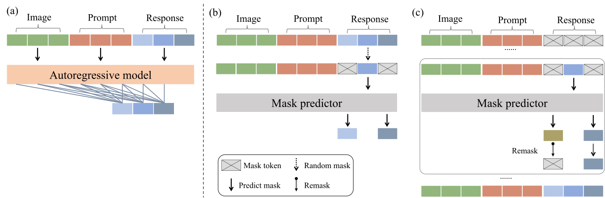
modeling_llada.py 的实现很直接：每条样本只抽一个 \(t\)，实际遮罩率取 \(p=(1-10^{-3})\,t+10^{-3}\)（避免 \(t\) 太接近 0）；所有回答 token（标签不为 −100 的位置）各自独立以概率 \(p\) 被换成 [M] 的词向量（[M] 的 token id 是 126336）；被遮位置的交叉熵除以 \(p\) 后求和，再除以这条样本的回答总长度，最后对批内样本取平均。除以回答长度这一步和 LLaDA 的 SFT 一致。提问和图像的位置标签为 −100，永远不会被遮。训练脚本里的 --use_conversation_mask False 表示不加按轮次的因果掩码，也就是下面要讲的“全双向”。
注意力怎么设。这是作者在结构上真正做了选择的地方。多轮对话推理时，模型是一轮一轮生成的：写第一轮回答时，第二轮的提问根本还不存在。如果训练时第一轮的 token 能看到第二轮的内容，训练和推理之间就有一点不一致。照这个思路，似乎应该加一个“按轮次的因果掩码”：同一轮之内双向可见，前面的轮次看不到后面的轮次。另一方面，作者认为全双向注意力能让模型在猜被遮位置时完整理解整段对话的上下文，并举了视频扩散模型用双向注意力提升时间一致性的例子。两种做法哪个好，作者用消融实验来定（第 4.4 节），结论是全双向在更多基准上略好，所以 LLaDA-V 采用全双向。
- “上界”只对回答成立。这个损失界住的是 \(-\log p_\theta(r\mid v,p)\)，不涉及图像和提问的似然。它和 AR 模型在回答上的交叉熵数值不能直接比较：AR 的是精确的对数似然，扩散的是上界。
- 两轮回答共用一个 \(t\)。同一条样本里所有回答位置的遮罩率相同，第二轮回答的猜测既能看到干净的第一轮提问，也能看到部分被遮的第一轮回答。推理时前面的轮次总是完整的，这是训练与推理分布的又一处差别，论文没有单独讨论。
3.2 推理：从一段全 [M] 的回答开始，逐步揭开
推理按轮进行。来了一个新提问时，之前所有轮次的提问和回答都完整地放在前面当上下文，模型只为当前这一轮生成回答。和 AR 模型不同的是，这一轮回答不是一个个接出来的，而是用掩码扩散的反向过程生成：先定一个目标长度，把这么多位置全部设成 [M]，然后分若干步，每一步预测所有被遮位置，保留其中一部分、把其余的重新遮回去。重新遮回哪些，LLaDA-V 主要用低置信度重掩码，也就是保留模型最有把握的那些。
这个例子也说明了扩散生成的一个特点：句末的标点和关键名词往往最先被定下，句子中间的修饰词最后才填。先定下的词又会成为后面步骤的条件，所以第 1 步一个把握不大的“白色”，到第 3 步就被看清图像之后的“橘色”取代了。
官方评测到底让模型写了多长。这一点论文正文没写，但对理解结果非常关键。官方评测脚本 eval/scripts/evaluate.sh 对不同基准设置了不同的生成参数，全部是温度 0、低置信度重掩码：
| 基准 | 生成长度 | 步数 | 每步定几个 token | 推理模式 |
|---|---|---|---|---|
| MMMU、MMMU-Pro（两种）、MMStar、AI2D、SEED-Bench、MMBench、MuirBench、VideoMME、MLVU、MME、RealworldQA | 2 | 2 | 1 | /no_think |
| ChartQA | 16 | 16 | 1（遇到换行即停） | /no_think |
| DocVQA、InfoVQA | 32 | 16 | 2 | /no_think |
| MathVista | 96 | 48 | 2 | /think |
| MathVerse（另有脚本） | 64 | 32 | 2 | /think |
也就是说，18 个基准分数里有 13 个（SEED-Bench 的图像与视频两个分数来自同一个评测任务），是让模型在 2 个位置上、用 2 步写出一个选项字母加一个结束符。这时“扩散生成”几乎退化成了一次分类：第 1 步定下最有把握的那个 token，第 2 步定下另一个。并行解码、生成顺序这些扩散模型的特色，在这些分数里基本没有发挥空间。真正需要写较长文字的只有 5 个基准，而且每步最多定 2 个 token。
为什么慢。前面讲过，双向注意力让 K/V 不能缓存，所以每一步都要把“几百到几千个视觉 token + 提问 + 整段回答”完整地算一遍。生成一段 128 个 token 的描述、用 128 步时，就要做 128 次完整前向；AR 模型只需要一次完整计算（预填充）加上 127 次只算一个新 token 的增量计算。官方 README 说，2025-06-30 接入 Fast-dLLM 之后，生成延迟从 60 秒降到 6 秒；演示脚本的注释写明这是在 A100 上生成 128 个 token。没有缓存时约合每秒 2 个 token，接入后约每秒 21 个（推算）。arXiv 版论文本身没有报告任何速度数字。
3.3 三阶段训练：先对齐，再指令微调，最后补推理
训练分三个阶段，前两个阶段沿用 LLaVA-NeXT 一系的成熟做法，第三个阶段是 LLaDA-V 自己加的。
- 第一阶段：图文对齐。只训练连接层，视觉塔和语言塔都冻住。数据是 LLaVA-Pretrain 的 55.8 万对“图片 + 一句描述”。学习率 \(10^{-3}\)，批量 64，训一个轮次。
- 第二阶段：视觉指令微调。全部参数一起训。数据来自 MAmmoTH-VL 的公开指令集，分两步：先在 1,000 万条单图数据（M-SI）上训，建立看图答题的基本能力；再在约 200 万条混合数据（M-OV）上训，其中有单图、多图和视频（代码里每段视频最多取 32 帧），让模型学会处理多张图和时间信息。
- 第三阶段：多模态推理增强。先在 VisualWebInstruct 的 90 万条带详细推理过程的问答上训练（VW）。训完之后，模型变得无论什么问题都要先写一大段推理再答。于是作者借鉴 Qwen3 的“混合思考”做法，再用一份约 300 万条的混合数据（M-OV 与 VW 混在一起）训练：M-OV 的提问后面加上
/no_think标记，要求直接回答；VW 数据里一半的提问加上/think标记，要求先推理。这样，用户可以用标记控制模型想不想先推理。
只训连接层，lr 1e-3→阶段 2a · 单图M-SI 1,000 万
全部参数，长度上限 8192→阶段 2b · OneVisionM-OV 200 万
单图 / 多图 / 视频，上限 16384→阶段 3a · 推理VW 90 万
带推理链的问答→阶段 3b · 平衡M-OV + VW 混合 300 万
/no_think 与 /think 标记
| 训练数据 | LLaVA-Pretrain | M-SI | M-OV | VW | M-OV + VW | LLaVA-NeXT（仅消融） |
|---|---|---|---|---|---|---|
| 样本数 | 55.8 万 | 1,000 万 | 200 万 | 90 万 | 300 万 | 73.8 万 |
| 批量 | 64 | 256 | 256 | 256 | 256 | 64 |
| 序列长度上限 | 8192 | 8192 | 16384 | 8192 | 16384 | 8192 |
| 学习率：视觉塔 / 语言塔 / 连接层 | — / — / 1e-3 | 2e-6 / 1e-5 / 1e-5 | 2e-6 / 1e-5 / 1e-5 | |||
| 轮次 | 1 | 各 1 | 1 | |||
取自原文表 1（arXiv 的 PDF 排版有错位，以 HTML 版为准）；视觉塔为 siglip2-so400m-patch14-384，语言塔为 LLaDA-8B-Instruct，全程双向注意力。
原文没有报告训练用了多少 GPU、多长时间。官方训练脚本的注释给了一点线索：第二、三阶段“通常在 8 个节点、每节点 8 张 GPU 上运行”，每张卡每步 1 条样本、梯度累积 4 步，正好凑出 256 的批量；第一阶段用 1 个节点 4 张卡。GPU 型号没有写。
4 实验：和只换了语言塔的 LLaMA3-V 比
4.1 实验设置：对照组对齐了什么
语言塔用公开的 LLaDA-8B-Instruct。作者明确承认它偏弱：LLaDA 只做了监督微调，没有做偏好对齐（RLHF、DPO 一类让模型更会对话和推理的后训练），所以纯文本能力落后于 Qwen2.5-7B-Instruct，也略逊于 LLaMA3-8B-Instruct。为了公平比较，主要的 AR 对照组 LLaMA3-V 用 LLaMA3-8B-Instruct 当语言塔，其余组件与 LLaDA-V 完全相同；连接层是随机初始化的两层 MLP。
比较两种建模方式时，理想的实验是除了建模方式以外一切相同：同样的参数量、同样的预训练数据和计算量、同样的后训练、同样的评测流程。LLaDA-V 的对照只在多模态这一层做到了相同；两个语言塔在进入多模态训练之前，已经各自经历了很不一样的训练。下表把对齐的和没对齐的分开列出来。
| 项目 | LLaDA-V | LLaMA3-V | 是否相同 |
|---|---|---|---|
| 视觉塔、连接层 | SigLIP2-so400m；两层 MLP | 同左 | 相同 |
| 多模态数据与阶段 | 55.8 万 → 1,000 万 → 200 万 → 90 万 → 300 万 | 论文称训练流程完全相同 | 相同 |
| 回答的训练目标 | 掩码扩散（上界） | 下一个词交叉熵 | 这是要比较的变量 |
| 语言塔预训练 | 2.3T token，从零训练 | 15T 以上 token | 不同 |
| 语言塔后训练 | 只做 SFT（450 万对） | SFT + 偏好对齐 | 不同 |
| 语言塔纯文本能力（LLaDA 论文表 2，同一协议重测） | MMLU 65.5、GSM8K 69.4、HumanEval 49.4、ARC-C 88.5 | 68.4、78.3、59.8、82.4 | LLaDA 9 项中低 6 项 |
| 注意力 | 双向，多头注意力 32 个 KV 头 | 因果，分组查询 8 个 KV 头 | 不同（随建模方式而来） |
| 评测时的解码 | 见 3.2 节表格（多数 2 token / 2 步） | 论文未写 | 无法核对 |
| 超参数 | 原文表 1 | 未单独列出 | 论文称相同，无法核对 |
| 权重是否公开 | 是 | 否（截至 2026-10-20 未见发布） | — |
语言塔的预训练量与文本分数取自 LLaDA 精读（LLaDA 论文表 2，LLaDA 与 LLaMA3 用同一套实现重测）；LLaMA3 的 15T 为 Meta 公布的数字。
所以，LLaDA-V 对 LLaMA3-V 的比较，回答的是：“拿两个现成的、能力相近但出身不同的 8B 语言模型，用完全相同的多模态流程训练之后，谁的多模态理解更好”。它不能单独证明“掩码扩散这种建模方式本身更适合多模态”，因为语言塔的差别和建模方式的差别是绑在一起的。作者的论证是：LLaDA 的文本能力更弱，如果它的多模态分数还更高，那么多出来的部分更可能来自扩散框架。这个推理在方向上成立，但前提是“文本更弱”能直接换算成“多模态起点更低”，这一点论文没有检验。
多学科知识与数学推理。MMMU 是大学水平、30 个学科的看图题，验证集 900 题；MMMU-Pro 是它的加强版，去掉了不看图也能答对的题，把选项扩到 10 个，其中 vision 设置把题目连同选项一起截成图片，只给模型一张图。MMStar 是 1,500 道人工筛过的“必须看图才能答”的选择题。MME 是 14 个子任务的是非题，分成感知（满分 2000）和认知（满分 800）两个总分。SEED-Bench 有图像和视频两部分的选择题。MMBench 是综合选择题，用循环打乱选项的方式防止蒙对。MathVerse 和 MathVista 是带图的数学题，MathVista 的 testmini 有 1,000 题；本文用的 MathVerse 是“只看图”版本，题目里的已知条件都画在图中，文字部分只剩提问。
图表与文档。AI2D 是中小学科学示意图上的选择题。ChartQA 是图表问答，答案多为数字或短语，允许 5% 数值误差。DocVQA 和 InfoVQA 分别是扫描文档和信息图上的问答，用 ANLS 打分（按编辑距离给部分分），需要读懂图中的小字。
真实场景。RealworldQA 是真实拍摄照片上的空间与常识问题。
多图与视频。MuirBench 是需要综合多张图的选择题；MLVU 是长视频理解；VideoMME 是视频选择题（900 段视频、2,700 题）。
这些题大多是选择题或是非题，模型只需要输出一个字母或一个词。所有评测都基于开源的 lmms-eval 框架。
4.2 数据扩展性：数据越多，谁涨得快
LLaDA-V 之后不久，有两篇工作在纯文本上专门比较了扩散和 AR 的数据效率（见旧版 数据受限下的扩散 vs AR）。它们的共同结论是：当独特数据有限、需要反复训练很多遍时，掩码扩散更占便宜。道理很直观：AR 模型每一遍做的都是同一套“从左往右猜下一个词”的题，重复几遍就背熟了，开始过拟合；掩码扩散每一遍都会重新抽遮罩比例和遮罩位置，等于从同一份数据里出新题，所以能从重复数据里继续学到东西。代价是在数据充足、每条只看一遍时，扩散模型每单位计算学得更慢。
LLaDA-V 的设定恰好不是这种情形：多模态数据每个阶段只训一遍，几乎没有重复（只有最后的 300 万条是前面数据的重用）。所以即使扩散真的“更吃数据”，那条机制在这里也不太适用。下面的曲线比较的是“同样一遍数据下，两个不同出身的语言塔谁学得快”。
为了看两种语言塔随数据量增加的表现，作者让 LLaDA-V 和 LLaMA3-V 走同样的两步：先用 LLaVA-Pretrain 训连接层，再在 MAmmoTH-VL 的单图数据上训全部参数（包括视觉塔），在不同数据量处各测 6 个基准。
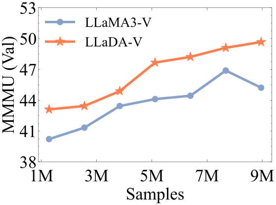
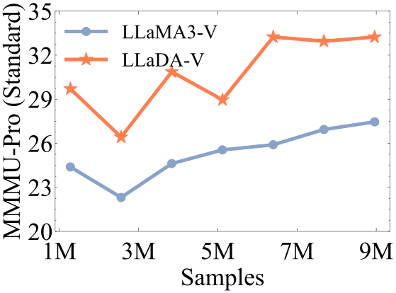
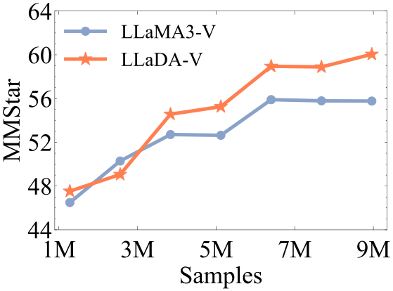
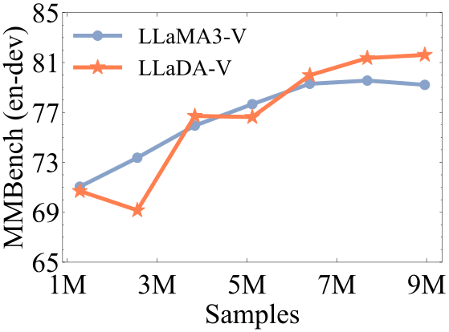
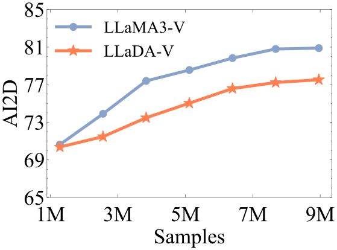
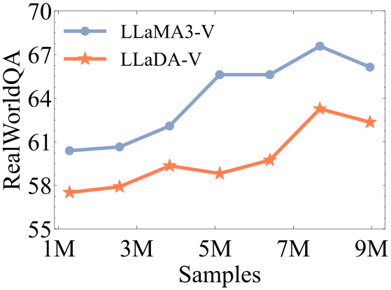
可以读出来的结论（数字为读图估计）：MMMU 上 LLaDA-V 从第一个点起就一直领先，最后约 49.7 对 45.2；MMMU-Pro 上领先最明显，LLaDA-V 的第一个点（约 29.7）已经高于 LLaMA3-V 的最后一个点（约 27.5），这就是论文“1M 样本的 LLaDA-V 胜过 9M 样本的 LLaMA3-V”的出处；MMStar 和 MMBench 前期互有交叉，后期 LLaDA-V 领先约 2–4 分；AI2D 上除第一个点几乎持平外，LLaMA3-V 一直领先约 2–4 分；RealWorldQA 上 LLaMA3-V 自始至终领先约 3–7 分。还要注意曲线本身很抖：LLaDA-V 在 MMMU-Pro 上从第一个点到第二个点掉了 3 分多，在 MMBench 上也有类似的回落。
作者从图中得出两点：第一，LLaDA-V 的成绩随数据增加持续提升；第二，尽管语言塔更弱，它在 MMMU、MMMU-Pro 这类多学科知识基准上扩展得比 LLaMA3-V 更好，在 AI2D 这类图表理解和 RealWorldQA 这类真实场景上则落后。
- 七个点很可能来自同一次训练的中间检查点。论文没有说明这些点是分别训练的模型，还是一次训练过程中存下的检查点。官方单图训练脚本每 5,000 步存一次，批量 256，即每隔 128 万条样本存一次；128 万、256 万……到 896 万，正好对上图中横坐标 1.3M、2.6M……9.0M 这 7 个位置（本站推断）。如果是这样，这张图描述的是“一次训练过程中的学习曲线”：学习率按余弦调度在 1,000 万条上衰减，中间检查点并不是“只用这么多数据训练到收敛”的模型，前后各点也不独立。所以它更像训练曲线的比较，而不是严格意义上的数据扩展实验。
- 图注说的“数学推理”图里并没有。图注称 LLaDA-V 在多学科知识和数学推理上扩展性更好，但 6 张小图里没有数学基准。CVPR 正式版把图注改成了较弱的说法（“在若干基准上表现出令人鼓舞的扩展趋势”），并在附录补了 DocVQA、InfoVQA、ChartQA、MathVista、MuirBench、MMMU-Pro vision 的曲线，称趋势“大体一致”。
- 后面 600 多万条数据对这几项帮助很小。把图中约 9M 处的读数和最终模型（表 2、表 3，经过全部三个阶段）对比：LLaDA-V 的 MMMU 从约 49.7 变成 48.6，MMStar 约 60.0 → 60.1，AI2D 约 77.6 → 77.8（读图估计）。也就是说，第二阶段后半段和第三阶段主要是在补多图、视频和推理能力，对这些单图选择题几乎没有影响。
4.3 18 个基准：赢在哪里，输在哪里
完整结果分在原文表 2（多学科知识与数学）和表 3（图表、文档、真实场景、多图与视频）里。表里还列了很多其他模型，但大多是从各自论文抄来的分数，训练数据和评测设置都不同。真正同条件的只有 LLaMA3-V 这一行。下表先把这两行抽出来。
| 基准 | 类型 | LLaMA3-V | LLaDA-V | 差值 |
|---|---|---|---|---|
| MMMU（val） | 多学科 | 45.4 | 48.6 | +3.2 |
| MMMU-Pro（standard） | 多学科 | 28.3 | 35.2 | +6.9 |
| MMMU-Pro（vision） | 多学科 | 14.5 | 18.6 | +4.1 |
| MMStar | 综合 | 56.5 | 60.1 | +3.6 |
| MME（认知 / 感知） | 综合 | 446 / 1581 | 491 / 1507 | +45 / −74 |
| SEED-Bench（image） | 综合 | 76.6 | 74.8 | −1.8 |
| MMBench（en-dev） | 综合 | 79.8 | 82.9 | +3.1 |
| MathVerse（vision-only） | 数学 | 29.0 | 28.5 | −0.5 |
| MathVista（testmini） | 数学 | 62.1 | 59.7 | −2.4 |
| AI2D | 图表 | 81.1 | 77.8 | −3.3 |
| ChartQA | 图表 | 77.8 | 78.3 | +0.5 |
| DocVQA（val） | 文档 | 86.2 | 83.9 | −2.3 |
| InfoVQA（val） | 文档 | 58.9 | 66.3 | +7.4 |
| RealworldQA | 真实场景 | 66.0 | 63.2 | −2.8 |
| SEED-Bench（video） | 视频 | 55.0 | 53.7 | −1.3 |
| MuirBench | 多图 | 47.4 | 48.3 | +0.9 |
| MLVU（dev） | 视频 | 57.5 | 59.5 | +2.0 |
| VideoMME | 视频 | 55.8 | 56.1 | +0.3 |
取自原文表 2、表 3；差值为本站计算（LLaDA-V 减 LLaMA3-V）。
和 LLaMA3-V 比。LLaDA-V 在多学科知识题（MMMU、MMMU-Pro、MMStar、MMBench）上领先 3–7 分，在多图和视频（MuirBench、MLVU、VideoMME）上小幅领先；在图表示意图（AI2D）、文档（DocVQA）和真实场景照片（RealworldQA）上落后 2–3 分。论文据此说，考虑到 LLaDA 的语言能力更弱，这个结果“令人印象深刻”。“18 项赢 11 项”的数法是：表 2 的 9 列赢 6 列（其中 MME 按认知分算赢），表 3 的 9 列赢 5 列。如果按 MME 常用的“认知 + 感知”总分来算，LLaDA-V 是 1998、LLaMA3-V 是 2027（推算），这一项应算输，总数就成了 18 项赢 10 项。
两处需要对照原文自己核对的地方。第一，图 1 的图注和 §4.2 都说 LLaDA-V“尤其擅长数学推理”，但表 2 里两个数学基准 MathVerse（28.5 对 29.0）和 MathVista（59.7 对 62.1）它都输了。第二，表 3 的图注说 LLaDA-V 在图表和文档任务上与 LLaMA3-V“相当”，正文则说它在 AI2D、DocVQA 上“竞争力较弱”；实际数据是四项里两胜两负，胜的 InfoVQA 领先 7.4 分，负的 AI2D、DocVQA 落后 2–3 分，两种说法都只说了一半。
和 Qwen2-VL 比。Qwen2-VL-7B 是当时很强的 AR 多模态模型。LLaDA-V 在大多数基准上落后，例如 MMMU 48.6 对 54.1、MMMU-Pro standard 35.2 对 43.5、AI2D 77.8 对 83.0、ChartQA 78.3 对 83.0、RealworldQA 63.2 对 70.1，只在 MMStar 上接近（60.1 对 60.7）。表里还有一项正文没提：MathVista 上 LLaDA-V 反而略高（59.7 对 58.2）。作者把差距主要归于语言塔：Qwen2-7B 比 LLaDA-8B 强得多。不过 Qwen2-VL 的数字取自其技术报告，训练数据、分辨率处理（它支持原生动态分辨率）和流程都与 LLaDA-V 不同，所以这只能当量级参照。
一个原文表里就有、但正文没讨论的参照：MAmmoTH-VL-8B。第 3.3 节提到，LLaDA-V 前两个阶段的数据和超参数几乎就是 MAmmoTH-VL 的配方。据 MAmmoTH-VL 论文，MAmmoTH-VL-8B 用 LLaVA-OneVision 结构、SigLIP-so400m 视觉塔和 Qwen2.5-7B-Instruct 语言塔，在同样的 55.8 万、1,000 万、200 万三步数据上训练（没有 LLaDA-V 的第三阶段）。原文表 2、表 3 中它和 LLaDA-V 共同报告的 13 个分数，MAmmoTH-VL-8B 全部更高：例如 MMMU 50.8 对 48.6、MMStar 63.0 对 60.1、MathVista 67.6 对 59.7、AI2D 84.0 对 77.8、ChartQA 86.2 对 78.3、MuirBench 55.1 对 48.3。这组近似同数据的对比很直接地说明，语言塔的强弱对 MLLM 的影响非常大，和作者“性能差距主要来自语言塔”的解释一致；但它同时也说明，在同样的多模态数据下，换一个更强的 AR 语言塔，就能全面超过 LLaDA-V。
和扩散类、混合类多模态模型比。原文图 1(b) 和表 2、3 中，LLaDA-V 明显高于 MetaMorph（LLaMA3.1-8B，MMMU 41.8）、JanusFlow（1.3B，MMMU 29.3）、Show-o（1.3B，27.4）、Orthus（28.2）和 D-DiT。CVPR 正式版补上了同期的扩散多模态模型：LaViDa-L（同样基于 LLaDA-8B，MMMU 43.3、AI2D 70.0、DocVQA 59.0）、Dimple（基于 Dream-7B，MMMU 45.2、AI2D 74.4）和 MMaDA（MMMU 30.2），LLaDA-V 仍然领先。不过这些比较都没有对齐数据：LaViDa 的两个阶段只用了 55.8 万 + 100 万条数据，LLaDA-V 用了约 1,646 万条（推算），多了一个数量级；混合模型的规模、目标（它们还要生成图像）也各不相同。所以“扩散 MLLM 中最好”更多反映的是数据和语言塔，而不是某种方法上的优势。
英文原文 §4.3 ↗ · 原文表 2 ↗ · 原文表 3 ↗
4.4 消融：多轮对话里该不该按轮次加因果掩码
第 3.1 节留下的问题在这里用实验回答。消融实验用较小的配置：先用 LLaVA-Pretrain 训连接层，再在 LLaVA-NeXT 的 73.8 万条数据上训全部参数，两组只差一个注意力掩码。
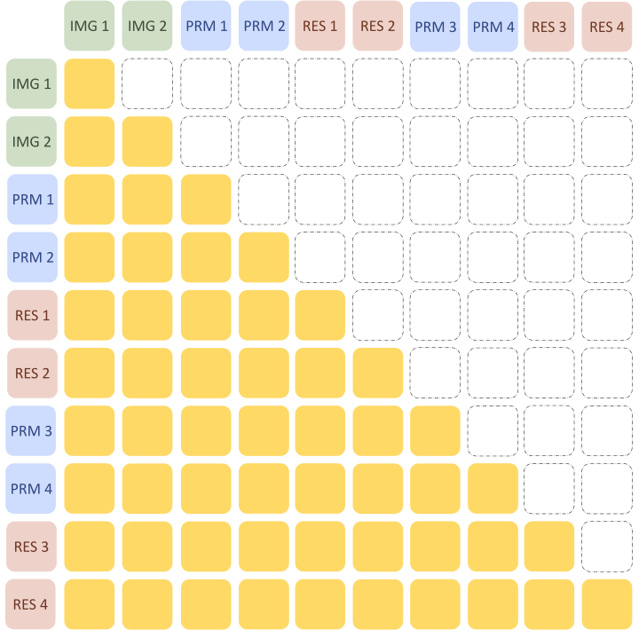
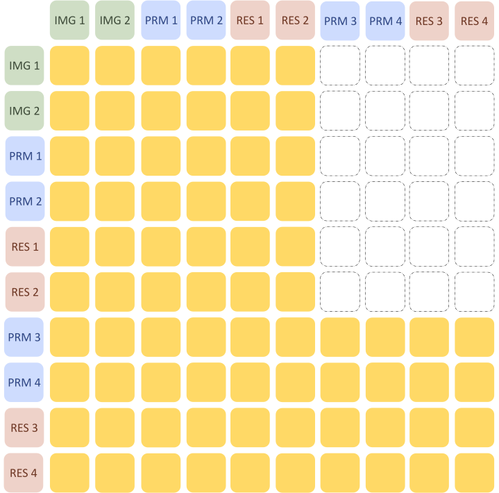
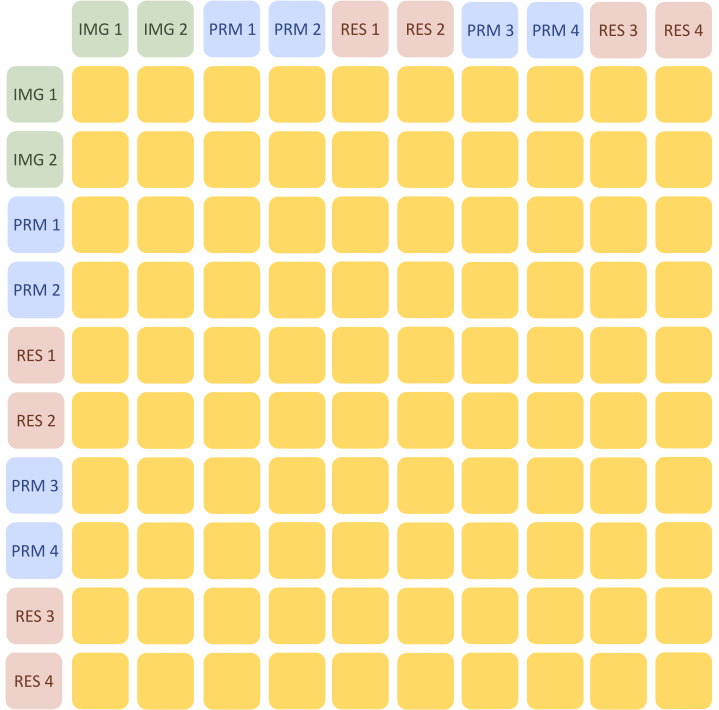
| 基准 | 按轮次因果 | 无掩码（全双向） | 差值 |
|---|---|---|---|
| MMMU（val） | 42.89 | 44.67 | +1.78 |
| MMMU-Pro（standard） | 26.01 | 26.59 | +0.58 |
| MMMU-Pro（vision） | 11.56 | 11.68 | +0.12 |
| MMStar | 49.60 | 49.79 | +0.19 |
| MME（认知 / 感知） | 365 / 1412 | 352 / 1370 | −13 / −42 |
| SEED-Bench（image） | 72.16 | 71.59 | −0.57 |
| SEED-Bench（video） | 45.75 | 45.54 | −0.21 |
| MMBench（en-dev） | 75.42 | 76.71 | +1.29 |
| AI2D | 70.89 | 71.47 | +0.58 |
| ChartQA | 55.20 | 54.88 | −0.32 |
| RealworldQA | 61.18 | 60.26 | −0.92 |
| MuirBench | 28.69 | 33.88 | +5.19 |
| 平均（不含 MME，11 项） | 49.03 | 49.73 | +0.70 |
取自原文表 4；平均值一行 arXiv 版没有，CVPR 正式版表 3 补上了，与本站按 11 项算出的结果一致。
全双向在 12 项里赢了 7 项，作者据此采用它，并推测原因是双向注意力能更完整地理解整段对话的上下文。
这个结论的份量其实很轻，有三个理由。第一，除 MuirBench 和量纲不同的 MME 外，所有差值都在 2 分以内，大部分不到 1 分；去掉 MuirBench 之后，两者 10 项平均分是 51.07 对 51.32（推算），只差 0.25 分。第二，两种掩码只在多轮训练样本上才有区别：如果一条样本只有一轮问答，“按轮次因果”就等于全双向。而 12 个评测基准全都是单轮提问，评测时两种模型看到的掩码完全一样。所以这个消融测的是“训练时让前面的轮次看到后面的轮次，对单轮评测有没有帮助”，影响本来就应该很间接（本站分析）。第三，论文没有解释 MuirBench 上 5 分的差距从何而来，也只跑了一次，没有重复实验。
这个选择还有一个论文 arXiv 版没提、CVPR 版才补上的代价：能不能缓存。
| 多轮对话中生成第 2 轮回答时 | 因果掩码（AR） | 按轮次因果 | 无掩码（LLaDA-V） |
|---|---|---|---|
| 第 1 轮（含图像）的 K/V 会不会随第 2 轮变化 | 不会 | 不会：第 1 轮看不到第 2 轮 | 会：第 1 轮也在看第 2 轮正在填写的 [M] |
| 前面轮次的 K/V 能否精确缓存 | 能 | 能 | 不能，只能近似缓存（如 Fast-dLLM 每隔若干步刷新） |
| 当前轮的提问与图像能否精确缓存 | 能 | 不能：同一轮内提问也看得到回答 | 不能 |
可以看到，即使选了按轮次因果，单轮对话里图像和提问的 K/V 也还是会随回答变化。LaViDa 的“前缀 DLM”把这一步也切断了（前缀只看前缀），从而能精确缓存视觉和提问部分；LLaDA-V 选了另一端：注意力最自由，代价是只能依赖近似缓存。
英文原文 §4.4 ↗ · 附录 B.2 ↗ · 原文图 4 ↗
4.5 结果的份量
把上面的实验放在一起，这些数字可以这样估量：
- 和 AR 的比较对齐了多模态这一层，没有对齐语言塔。视觉塔、连接层、1,600 多万条多模态数据和阶段划分相同；语言塔的预训练量（2.3T 对 15T 以上 token）、后训练（只有 SFT 对 SFT + 偏好对齐）和注意力结构都不同。LLaMA3-V 的权重、评测日志和解码设置都没有公开，它的超参数是否也针对 AR 模型调过，论文没有说。因此“同样的数据下扩散更好”这个说法，严格说是“同样的多模态数据下，这一个扩散语言塔在 11 个基准上分数更高”。
- 很多差距落在一次评测的统计波动之内。一个准确率为 \(p\)、题数为 \(n\) 的基准，分数本身的标准误约为 \(\sqrt{p(1-p)/n}\)。MMMU 验证集 900 题、准确率约 47% 时约为 1.7 分；MMStar 1,500 题约 1.3 分；MathVista testmini 1,000 题约 1.5 分；VideoMME 2,700 题约 1.0 分（均为推算）。两个模型在同一批题上比较时，差值的波动会比这小一些，但 ChartQA +0.5、VideoMME +0.3、MuirBench +0.9、MathVerse −0.5 这样的差距仍不足以判断胜负。论文所有结果都只跑一次，没有误差线。真正稳定的信号是 MMMU-Pro（+6.9）、InfoVQA（+7.4）这类大幅领先，以及 AI2D、RealworldQA 上 3 分左右的稳定落后（数据扩展曲线上一直如此）。
- 多数基准只测了 2 个 token。18 个分数中有 13 个是让 LLaDA-V 用 2 步生成 2 个 token 得到的，本质上是在比较“看完图和题之后，第一个答案 token 的分布”。这能说明扩散语言塔学到了不错的条件表示，但几乎没有检验扩散式的长文本生成质量。需要写较长回答的 5 个基准（ChartQA、DocVQA、InfoVQA、MathVista、MathVerse）里，LLaDA-V 两胜三负。
- “18 赢 11”的计数和图 1 的选取都偏有利。MME 按认知分计为赢，按总分则是输；图 1(a) 的雷达图省掉了 8 个基准中的 6 个负项，且各轴刻度不同。
- 和其他扩散 MLLM 的比较没有对齐数据和规模。LLaDA-V 的数据量是 LaViDa 的 10 倍左右；混合模型多为 1–2B 规模、还要兼顾生成。表中其他模型的分数都是沿用各自论文的数字。
- 近似同数据的 AR 参照全面领先。同样用 MAmmoTH-VL 数据训练、语言塔为 Qwen2.5-7B 的 MAmmoTH-VL-8B，在两者共同报告的 13 个分数上都高于 LLaDA-V。这说明在目前的语言塔水平下，扩散 MLLM 还没有达到同数据 AR 模型的前沿。
- 速度不在 arXiv 版的比较范围内。arXiv 版没有任何速度数字；没有缓存时生成 128 个 token 要约 60 秒（README，A100）。CVPR 版补充的速度对比见下一节，它的条件也需要仔细看。
- 纯文本能力是否保留没有测。经过 1,600 多万条多模态数据训练后，LLaDA-V 的纯文本能力有没有下降，论文没有报告。
总的来说，这篇论文最站得住的结论是：一个从零训练的 8B 掩码扩散语言模型，按照 AR MLLM 的标准配方做视觉指令微调，可以得到和同流程 AR 模型处在同一水平的多模态理解能力，在多学科知识类选择题上还更好一些。“扩散框架本身更适合多模态”或“数据扩展性更好”这两个更强的说法，目前的实验支撑不足。
5 CVPR 版新增：推理速度、缓存刷新间隔与注意力形态
正式版的主要变化有这几处：摘要和引言加入了一个新论点，认为双向注意力比因果注意力更能刻画图像中的空间关系；表 1、表 2 补上了同期的 LaViDa-L、Dimple、MMaDA；新增 §3.5“与 AR 基线的补充比较”（推理效率与注意力形态）和 §3.6“准确率与吞吐量的权衡”；附录补了更多数据扩展曲线；局限性一节加上了“推理效率仍然有限”。另外，图 3 的图注和 MMMU-Pro 那句“1M 胜过 9M”都改成了更温和的说法。
5.1 推理效率：加了 Fast-dLLM 之后和 LLaMA3-V 一样快？
扩散模型每一步都要重算整段序列，因为双向注意力让每个位置的 K/V 都可能随别处的变化而变。Fast-dLLM 的观察是：相邻两步之间，前缀（图像和提问）的 K/V 其实变化很小。于是它把前缀的 K/V 缓存下来，只重算回答部分，每隔若干步才把整段重算一次、刷新缓存，这叫近似 KV 缓存，刷新间隔记为 \(r\)。它的另一半是按置信度并行解码：每一步不再固定定下几个 token，而是只要模型对某些位置足够有把握，就一次定下多个。LLaDA-V 仓库里的实现是：每步至少定下 1 个；第 \(n\) 个候选（按置信度从高到低排）要被采纳，置信度要超过 \(1-\tfrac{1}{n+1}\)，例如第 2 个要超过 0.67，第 3 个要超过 0.75。
| 模型（MathVerse，单张 A100） | 准确率 | 吞吐量（token/秒） |
|---|---|---|
| LLaDA-V（加 Fast-dLLM） | 28.5% | 32.4 |
| LLaMA3-V（AR） | 29.0% | 30.5 |
取自 CVPR 版表 4。
作者据此说，LLaDA-V 在保持与 LLaMA3-V 相当准确率的同时，推理速度也相当。读这组数字要知道它是在什么条件下测的：
- 只测了一个基准、一种长度。官方 MathVerse 脚本里带 Fast-dLLM 的那条命令是：生成长度 64、步数上限 32、并行解码阈值参数 1、刷新间隔 32（本站推断表 4 用的就是这组设置，论文没有写明）。
- AR 一侧用的什么推理引擎、批量多大，没有写。评测脚本的批量是 1。8B 模型用 16 位精度时参数约 16 GB；A100 的显存带宽约 1.6–2.0 TB/s，所以批量为 1 时 AR 解码速度的理论上限大约是每秒 100–130 个 token（推算，忽略视觉 token 的预填充和 KV 读取）。30.5 token/秒远低于这个上限，说明 AR 一侧大概率是没有专门优化的实现（例如 Hugging Face 的逐 token 生成），而不是 vLLM、SGLang 这类推理引擎。所以这组数字说明的是“在同样朴素的实现下两者速度相近”，不是“扩散 MLLM 和优化过的 AR 一样快”。
- 吞吐量怎么算没有说明。扩散模型生成的是固定长度 64 的画布，结束符之后的填充位置算不算进“生成的 token 数”，会直接影响 token/秒，论文没有交代。
5.2 刷新间隔：用一点准确率换速度
近似缓存的刷新间隔 \(r\) 越大，整段重算的次数越少，速度越快；但缓存里的 K/V 和“真实值”偏离得越久，准确率可能下降。作者在 MathVista 上扫了 \(r\) 从 2 到 48：
| 刷新间隔 r | 2 | 4 | 8 | 16 | 32 | 48 |
|---|---|---|---|---|---|---|
| 准确率（%） | 59.1 | 59.1 | 58.2 | 57.0 | 56.6 | 56.8 |
| 吞吐量（token/秒） | 10.6 | 16.9 | 24.0 | 29.8 | 34.2 | 35.5 |
论文的说法是“速度提高约 3.3 倍、准确率只降 2.3%”。这里的 2.3% 是百分点（59.1 → 56.8），相对下降约 3.9%（推算）；3.3 倍是 35.5 ÷ 10.6。这个刷新间隔可以当作一个旋钮：对准确率要求高的场景调小，对速度要求高的场景调大。论文没有交代这组实验的生成长度、步数和硬件，只说明是在 Fast-dLLM 设置下测的。
5.3 注意力形态：LLaDA-V 看得更“全局”，能解释它的优势吗
为了解释 LLaDA-V 为什么能在语言塔更弱的情况下赢 11 个基准，作者比较了两个模型的注意力矩阵。做法是随机取 100 张 ImageNet 图片，配上“请详细描述这张图”的提问，在所有层、所有头上计算三个指标再取平均。
| 模型 | “看向后方”的比例 | 注意力熵（比特） | 出现注意力汇聚点的比例 |
|---|---|---|---|
| LLaMA3-V | 0.00% ± 0.00% | 3.41 ± 0.17 | 100% |
| LLaDA-V | 53.41% ± 0.61% | 8.40 ± 0.09 | 0% |
取自 CVPR 版补充材料表 7。原表在汇聚点一栏的括号里另有两个数（0.6 与 0.1），疑为两个模型各自的判定阈值，论文没有说清楚，这里不列。
三个指标的意思是：“看向后方的比例”是每个 token 分给它后面那些 token 的注意力权重之和；注意力熵衡量注意力分得有多散，越大越均匀；“注意力汇聚点”指序列第一个 token 吸走了最多注意力的现象，这在 AR 语言模型里很常见。作者的解读是：LLaDA-V 的注意力更全局、更均匀，没有汇聚点，因此能更广泛地关注图像的各个区域，更好地刻画空间关系，这“可能”解释了它在视觉语言任务上的优势。
- 前两个指标大部分由掩码决定。因果掩码下，任何 token 都不可能看向后方，所以 LLaMA3-V 的 0.00% 是结构上注定的；双向模型自然会有相当比例的注意力落在后方。同样，因果模型里第 \(i\) 个 token 最多只能把注意力分给 \(i\) 个 token，靠前的 token 熵必然很低，平均下来整体熵就被拉低了。用 \(2^{H}\) 换算成“相当于在多少个 token 上均匀分配”，3.41 比特约等于 11 个，8.40 比特约等于 338 个（推算），差距很大，但其中多少来自掩码本身、多少来自学到的行为，这个实验分不开。
- 没有和多模态能力挂钩。这些形态特征在纯文本的 LLaDA 上大概率同样存在，论文没有说明它们是多模态训练带来的，也没有显示注意力形态和任何一个基准的分数有关联。
- 和结果对不上。如果“更全局的注意力更善于刻画空间关系”是 LLaDA-V 领先的原因，那么最依赖空间和版面理解的 AI2D、RealworldQA、DocVQA 应该是它的强项，实际上这三项恰恰是它输掉的。
6 相关工作、局限、案例与结论
扩散语言模型。作者把它们分成连续扩散（在词向量空间里加高斯噪声，如 Diffusion-LM）和离散扩散（直接在 token 上加噪，如 D3PM、SEDD）两类，其中掩码扩散这一支效果最好。Ou 等人、Shi 等人（MD4）、Shao 等人奠定了掩码扩散的理论基础，并在 GPT-2 规模上证明它能和 AR 竞争；LLaDA 把它推到 8B，成为第一个能在大量下游任务上与 LLaMA3 这类现代 LLM 比较的扩散语言模型。作者特别指出：LLaDA 的语言能力略逊于 LLaMA3-8B，而 LLaDA-V 却在更多任务上超过了 LLaMA3 基线，这“暗示”LLaDA-V 的框架可能对多模态有内在优势。按第 4.5 节的分析，这个暗示目前还只是一种可能。
多模态理解。按建模方式，MLLM 分为三类：AR 模型、AR + 扩散混合模型、纯扩散模型。最接近的工作是 D-DiT：它对图像用连续扩散、对文字用离散扩散，但语言建模能力有限，分数远落后于 AR 和混合模型。LLaDA-V 的区别在于用了一个足够强的扩散语言模型，加上有效的训练框架。CVPR 版还加了一段“同期工作”：Dimple、LaViDa 同样探索离散扩散做多模态理解，MMaDA 用统一的离散扩散框架同时做理解和生成，之后的 LaViDa-O、Lumina-DiMOO 把统一扩散模型推向更多任务；LLaDA-V 自我定位为“专注理解、强调数据扩展与和 AR 的同流程对照”。
局限。arXiv 版只承认了一条：图像处理方式比较简单。高分辨率图像被切片、缩放后分别送进 SigLIP2，再把特征拼起来。和 Qwen2-VL 那种原生支持动态分辨率的做法相比，这既费 token，也可能损失视觉表示的精度。这一点和 AI2D、DocVQA 上的落后可能有关，但论文没有做相关实验。CVPR 版补上了第二条：推理效率仍然有限，没有 Fast-dLLM 这类加速时，迭代去噪加上没有原生 KV 缓存，解码吞吐量很低。
生成样例。附录 B.3 给了三个对话样例（原文表 6–8）：详细描述一张阿尔卑斯山风景照、数照片里有几个人、判断一张城市照片是不是真实拍摄的。后两个样例展示了第三阶段训练出的“先分步推理再给答案”的风格：先观察、再计数、最后给出结论。第一个样例值得仔细看：描述的大意正确，但开头一句就出现了重复的冠词和缺词，结尾几句又反复使用同一个形容词、重复相近的句子。论文没有讨论这些瑕疵。它们和扩散生成固定长度画布、每步同时定下多个位置时容易出现的局部不连贯是一致的（本站推测）。
结论。作者的结论是：LLaDA-V 是第一个训练和采样都纯粹基于扩散的、建立在视觉指令微调框架和大型扩散语言模型之上的 MLLM；它在混合模型和纯扩散模型中表现最好，在数据扩展性和更多基准上优于同训练策略的 LLaMA3-V。作者认为，随着扩散语言模型本身变强，扩散 MLLM 会逐步缩小和 Qwen2-VL 这类领先模型的差距。
7 后来怎么样了
LLaDA-V 发表后的一年多里，有这些直接相关的进展：
- 推理加速接入。2025-06-30，官方仓库接入了 Fast-dLLM，README 称延迟从 60 秒降到 6 秒（演示脚本注释：A100，生成 128 个 token）；仓库另外支持 dLLM-Cache，同样条件下约 25 秒。CVPR 正式版的效率实验（第 5 节）就建立在这个集成上。
- 发表。论文被 CVPR 2026 接收（海报，会议论文集第 10093–10105 页），正式版补充了速度、注意力形态和更多数据扩展曲线。
- 同期的扩散多模态模型。LaViDa（arXiv 2505.16839，NeurIPS 2025）同样基于 LLaDA 或 Dream 做理解，但重点放在工程上：互补掩码、能精确缓存视觉与提问的前缀 DLM、时间步偏移。Dimple（arXiv 2505.16990）先用 AR 方式训练、再转成扩散训练，以缓解纯扩散训练的不稳定和长度偏差，并提出按置信度决定每步解码个数。MMaDA（arXiv 2505.15809）把图像也离散化，用一个掩码扩散目标同时做理解和生成。这三者与 LLaDA-V 发布在同一周。
- 走向统一模型。之后的 LaViDa-O（arXiv 2509.19244）与 Lumina-DiMOO（arXiv 2510.06308）把扩散多模态模型推向理解、生成、编辑合一。同一团队在 2026 年 3 月发布了 LLaDA-o（arXiv 2603.01068），README 介绍它是一个长度自适应的全模态扩散模型，支持视觉理解、文生图和指令式图像编辑。
LLaDA-V 留下的问题仍然开放：扩散语言塔变强之后（例如同组后来的 LLaDA 1.5、LLaDA-MoE），多模态差距能不能按作者预期缩小；在真正需要长回答的任务上，扩散生成的质量和速度能否同时达到 AR 水平；以及能否设计出既保留双向注意力、又能精确缓存的注意力结构。多模态扩散模型的整体对照见旧版结构拆解页。
作者
单位按论文署名。背景只列可公开查证的信息：作者主页、实验室与机构页面、作者自己的论文署名。
影响力
- 引用：见页首（Semantic Scholar 快照）。
- 发表：CVPR 2026（海报，2026-06-05 场次），收录于会议论文集第 10093–10105 页；arXiv 首版 2025-05-22，v2 2025-06-04。
- 开源：ML-GSAI/LLaDA-V 仓库 358 个 star、28 个 fork（截至 2026-10-20），创建于 2025-05-22；GitHub 没有识别到仓库顶层的许可证文件。仓库提供完整的三阶段训练脚本、基于 lmms-eval 的评测脚本和演示脚本。权重 GSAI-ML/LLaDA-V 于 2025-05-29 公开（README），Hugging Face 显示 29 个点赞、近 30 天下载 4,104 次（2026-10-20）。对照组 LLaMA3-V 的权重没有公开。
- 作为参照：同期的 LaViDa、MMaDA 页面与旧版拆解都把 LLaDA-V 当作“连续视觉特征 + 扩散语言塔”路线的代表；CVPR 版本身也把同期扩散模型补进了对照表。
延伸阅读
- 旧版结构拆解：多模态扩散 LLM（MMaDA、LLaDA-V、LaViDa 的结构对照、与自回归模型对照表和简答题）
- LLaDA 精读：LLaDA-V 的语言塔，8B 掩码扩散模型怎样从零训练、怎样做 SFT
- MDLM 精读：掩码扩散的训练目标和 \(1/t\) 加权从哪来
- LaViDa 精读：同期的扩散 VLM，互补掩码与可精确缓存的前缀 DLM
- MMaDA 精读：同一语言底座、把图像离散化的统一理解与生成模型
- Fast-dLLM 精读：近似 KV 缓存与按置信度并行解码，LLaDA-V 的加速来源
- 块扩散精读：把“分块、块间从左到右”写进训练，从而能用标准 KV 缓存
- vLLM 精读：AR 推理为什么依赖 KV 缓存，以及优化过的推理引擎能快多少
- 返回论文书架
本页是对论文的中文精读笔记，正文为本站撰写，并非翻译。数字与结论以原文为准：arXiv:2505.16933（本页读 v2）。原文图 1–4 取自 arXiv HTML 版，原文以 CC BY 4.0 许可发布，图片未做修改。第 5 节的数字取自 CVPR 2026 正式版及其补充材料（CVF Open Access），本页未转载其中的图片，相关数据图为本站根据其表格重绘。代码层面的细节取自官方仓库 ML-GSAI/LLaDA-V 与 Hugging Face 上的模型配置。对照数字另取自 LLaDA（arXiv:2502.09992）、MAmmoTH-VL（arXiv:2412.05237）与 LaViDa（arXiv:2505.16839）。